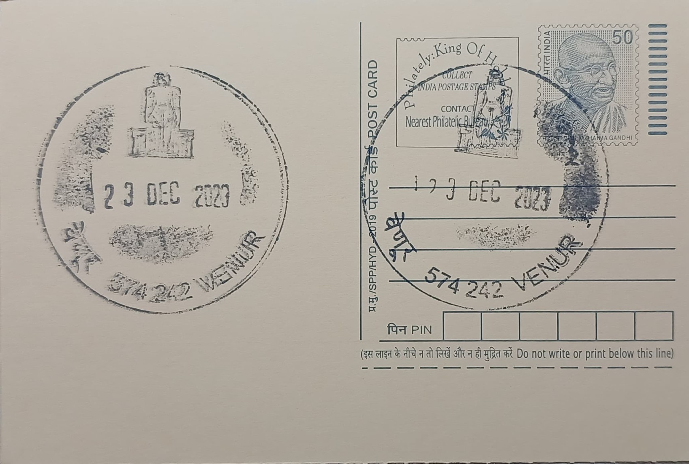

Baahubali (Lord Gomateswara Statue)
ಬಾಹುಬಲಿ (ಭಗವಾನ್ ಗೊಮ್ಮಟೇಶ್ವರ ಪ್ರತಿಮೆ)


Venur, a small settlement on the banks of the Phalguni river in Dakshina Kannada district, rose to prominence as the capital of the Ajila dynasty, Jain chieftains who governed this stretch of the Karnataka coast between roughly the fourteenth and eighteenth centuries. The village's enduring identity rests on its colossal monolithic image of Bahubali, venerated as Lord Gomateshwara, which was commissioned by the Ajila ruler Timmanna Ajila and consecrated in 1604 CE. Local tradition attributes the carving to the sculptor Beeru Kalkuda, and the statue has since given Venur its standing as one of the handful of places in coastal Karnataka associated with a monumental Bahubali image, alongside Shravanabelagola, Karkala and Dharmasthala.
Within Jainism, Bahubali is revered as the son of the first Tirthankara, Rishabhanatha, who renounced a hard-won kingdom to his brother Bharata and undertook such prolonged, motionless meditation in a forest that creepers grew up his limbs and anthills formed at his feet, a penance through which he is held to have attained kevala jnana, or omniscient liberation, ahead of his own father. The Venur statue belongs to this iconographic tradition of standing, unclothed, meditating Bahubali figures and is counted among the principal Jain pilgrimage monuments of the Tulu coast, a region whose Digambara Jain community once wielded considerable political and mercantile influence under rulers such as the Ajilas, the Chowtas of nearby Moodabidri, and the Bhairarasa chiefs of Karkala.
The image itself is carved from a single block of granite and rises to roughly 38 feet, or about 11 to 12 metres, making it one of the taller Bahubali monoliths in the state after Shravanabelagola's. It faces north and stands unsupported on an open, elevated platform fashioned to resemble a pair of lotus blooms, with the figure's characteristic serenity, elongated earlobes, and vine tendrils climbing the legs rendered in proportion across the full height of the stone. The statue was erected as part of a wider religious complex that the Ajila rulers patronised at Venur, which eventually grew to include eight Jain basadis clustered within walking distance of the colossus.
Among these surrounding shrines, the Shanthinatha basadi is considered the most important, while the Akkanagal basadi, traditionally said to have been built by two sisters and dedicated to Chandraprabha, and the Kallu basadi, dated to around 1490 and also dedicated to Shanthinatha, point to Jain architectural activity at the site well before the Bahubali statue's installation. The Choubisa Tirthankara temple, enshrining images of all twenty-four Tirthankaras, was added in 1621, shortly after the main statue's consecration. Notably, Venur was never an exclusively Jain village: the Mahalingeshwara temple, a Shaiva shrine standing close to the basadi cluster, reflects the coexistence of the ruling Jain elite with a largely Hindu population, a pattern typical of Tuluva Jain capitals of the period.
Like its larger counterpart at Shravanabelagola, the Venur statue is periodically rededicated through Mahamastakabhisheka, a head-anointing ceremony in which the monolith is bathed from a raised scaffold in milk, sugarcane juice, turmeric paste, sandalwood, and other consecrated substances before assembled pilgrims and monks; the ceremony has been conducted at Venur at intervals of several decades, most recently drawing organised participation from Digambara Jain mathas of the region. The temple complex today functions under local Jain trust management with support from the Karnataka state archaeology and tourism departments, which maintain the statue's platform and the adjoining basadis as a protected pilgrimage and heritage site open to visitors travelling the Dharmasthala-Karkala Jain circuit.
| Date of Introduction | November 18, 2016 |
|---|---|
| Address | Sub Postmaster, |
| Venur SO, | |
| Dakshina Kannada (dt.), Karnataka - 574242. |